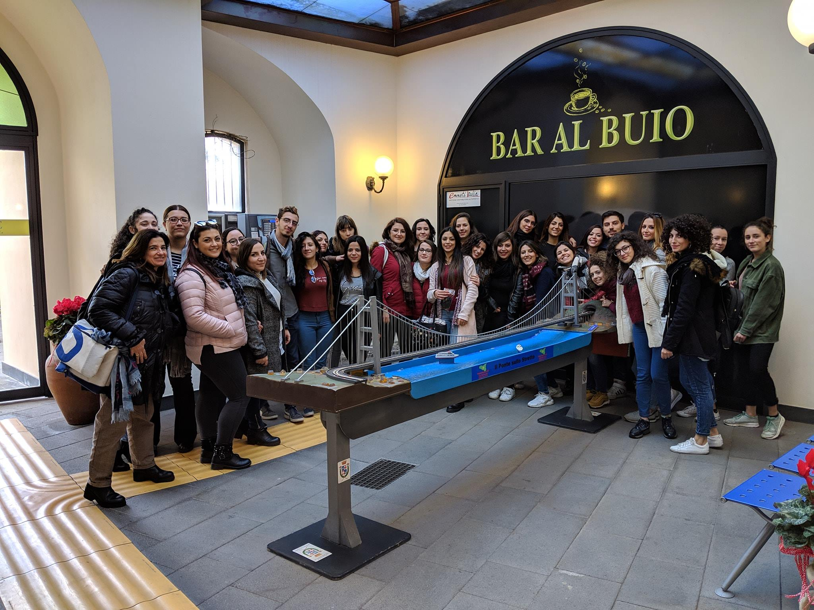

cosa facciamo
Il Polo si occupa attivamente dell'integrazione fornendo a vedenti e non, attività culturali ed empatiche, precisamente attraverso il Museo Tattile, il Giardino Sensoriale, Il Bar al Buio e lo Showroom.
Museo
Bar al Buio
Eventi
Presso il Polo Tattile Multimediale proseguono le attività culturali con il susseguirsi di eventi e incontri per ipovedenti e vedenti, di seguito troverete i prossimi in agenda.
-

Presentazione Libro “Abitare gli abiti”
0 marzo 2024 17:00
-

Festival “Le Vie dei tesori”
0 marzo 2024 17:00
-
Una domenica al museo
0 marzo 2024 17:00
-
Notte dei musei
0 marzo 2024 17:00
Visite
Per gruppi di max 6 persone è consigliata la prenotazione. obbligatoria per gruppi oltre 6 persone, scolaresche. È possibile prenotare contattando i nostri uffici in una delle seguenti modalità:
— A mezzo telefono al numero +39 095 500 177
— A mezzo fax al numero +39 095 509 881
— A mezzo posta elettronica all'indirizzo visite@polotattile.it
Vi preghiamo di specificare sempre il numero di visitatori, la data e un contatto al quale confermare la visita. Per informazioni generali mandate una mail all'indirizzo info@polotattile.it